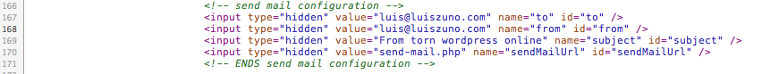

“Elliot” Documentation by “ansimuz v1.0
“Elliot TEMPLATE”
Created: 01/06/2011
By: Luis Zuno aka ansimuz
Email: luis@luiszuno.com
Thank you for downloading my theme. If you like this file you may like some of my premium items found on themeforest portfolio Visit portfolio. Thanks so much!
Table of Contents
HTML - top
This theme is a fixed layout theme made in HTML 5 its perfect for photography showcase sites. It has 7 + and 2 skin; light and dark skins.
HTML STRUCTURE
The Site structure is composed of a block stretchable to the size of the browser window on which float the other elements that are positioned in relation to the browser window.
- Background holder for the background and loaded images.
- Navigation menu always on top and right side.
- Scrollbar. Only for home page.
- Logo holder on top-left side
- Footer. Will be always hidden until clicked on the bottom-right tab.
FILE LIST
This download package contains all the necessary HTML, CSS, JS and Image files necessary to build a complete site. Also it includes this help file and some editable PSD files in case you need to customize the graphic elements.
WIDE PAGES
By default all pages are in a 750px width layout but you can change to a wider layout for 950px by adding the following class to the body tag of the page:
<body class="wide-950">
FIXED FOOTER
If you don't want to have a n auto hide footer. You can change the "id name" for the "footer-container" block:
<div id="footer-container-fixed">
TOOLTIPS
For the tooltips i am using a javascript library called poshytip its very easy to set up. The default browser tooltip that displays the value of the title attribute is replaced with a "poshier" version just add a title text and a class of poshytip.
Example
<a href="#" title="I am a tooltip" class="poshytip">Tool tip</a>
<img src="image.jpg" title="I am a tooltip" class="poshytip" alt="Image" />
CONTACT FORM
There are 2 files nedded filed needed for the FORM VALIDATION (js/form-validation.js) and the PHP (send-mail.php) that actually sends the data .
The HTML
Configuring the email recipients and data
To set the sender and the recipients just change the value for the hidden input values inside the contact.html.

Form validation
Form-validation.js This is the javascript validation for the fields.
How to add fields to the contact form:

CSS Files and Structure - top
This theme uses several css files contained in the css folder. Please note that the "skins/color.css" may overwrite styles defined at the "css/style.css" file. If you need to edit a skin the css files at the skins folder. Dont forget to include the skin name at the <head> section of top of the document.
<!-- CSS -->
<link rel="stylesheet" href="skins/dark.css" type="text/css" id="css-skins" />
List of css files under the CSS folder:
- css/ie-hacks.css
- css/jquery.tweet.css
- css/reset.css
- css/social-icons.css
- css/style.css
- css/superfish.css
Image Files - top
All the graphic elements for the entire theme are contained at the "img" folder. The mockup images used to feed the site are contained at the "img/dummies" folder. All the background images are stored at the "img/bg" folder. Here's the list of available background images:
- blue.gif
- dark.gif
- emerald.gif
- gray.gif
- purple.gif
- yellow.gif
JavaScript - top
All the pages link the neccessary js files inside the "head" tag of the document. If you need to modify the behavior from a certain jquery element open the "js/custom.js" file. where you can alter the parameters of some of the js elements.
E) PSD Files - top
I have included editable psd files in case you need to change or edit the graphic elements. You can find them at the PSD folder.
- PSD/footer-open.psd
- PSD/interface-dark.psd
- PSD/interface.psd
- PSD/tab.psd
Sources and Credits - top
I've used the following images, icons or other files as listed.
JAVASCRIPT
- jQuery http://jquery.com/
- jqueryui . Jquery ui Home page.
- jQuery Easing Plugin http://gsgd.co.uk/sandbox/jquery/easing/
- PrettyPhoto http://www.no-margin-for-errors.com/projects/prettyphoto-jquery-lightbox-clone/
- Superfish http://users.tpg.com.au/j_birch/plugins/superfish/
- Google fonts api http://fonts.googleapis.com/
- Poshytip http://vadikom.com/tools/poshy-tip-jquery-plugin-for-stylish-tooltips/
- SmoothDivScroll
- Google map script byGmaps.js
IMAGES
- Social icons http://www.komodomedia.com/download/
Once again, thank you for downloading this free file. I don't offer support on freebies however you can always look for help at http://luiszuno.com/free-forums/
ansimuz